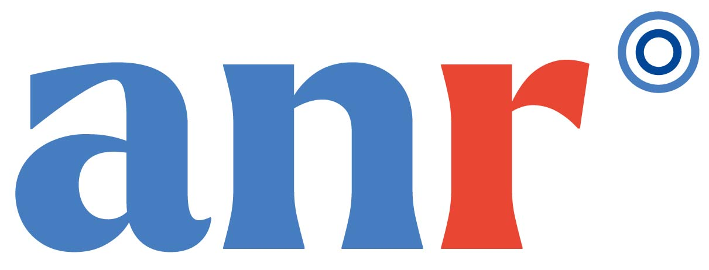

The ANR TheATRE is dedicated to the study of entropy-regularized OT problems and their applications.
Start date: Jan. 2025.
Members
- Théo Lacombe (PI)
- François-Xavier Vialard (Prof at Université Gustave Eiffel)
- Bernhard Schmitzer (Prof at Gottingen University)
- Hicham Janati (A. Prof at Telecom Paris)
- Mathis Hardion (Ph.D. since sept. 2025)
Papers
The list of papers acknowledging the ANR TheATRE is available on HAL.